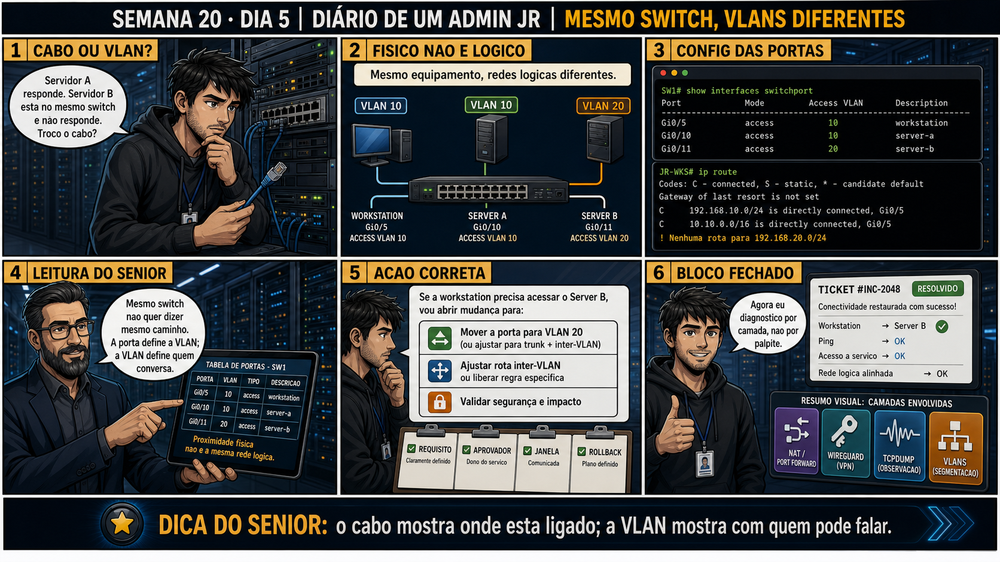

DIARIO DE UM ADMIN JR. | FASE 2 — REDES, DO IP AO DIAGNÓSTICO
🧠 Antes de começar — 20 segundos de memória (Dia 4)
1. Ontem você validou isolamento com dois testes. Sem olhar: qual era o teste de CONTROLE, e por que ele vinha antes do teste de isolamento? 2. Ontem a validação deu certo — o isolamento estava funcionando. Hoje o mesmo tipo de teste acusa uma falha real: uma VLAN alcançando outra que não deveria. Quais são os dois pontos de configuração mais prováveis de causar exatamente esse tipo de vazamento?
1. O teste de controle era pingar DENTRO da mesma VLAN, confirmando que a rede funcionava normalmente antes de interpretar o resultado do teste entre VLANs. Ele vinha antes pra eliminar a ambiguidade: sem ele, um ping falhando entre VLANs podia ser tanto isolamento certo quanto rede simplesmente quebrada. 2. Uma porta access configurada na VLAN errada, ou um trunk permitindo mais VLANs do que deveria — revelados por show vlan brief e show interfaces trunk, respectivamente. É exatamente por aí que a investigação de hoje começa.
🔗 Conecta com o Dia 4 (validação de isolamento): Você já sabe validar isolamento
com teste de controle. Hoje o cenário inverte: a validação FALHOU — a VLAN de visitantes consegue alcançar o
servidor interno, quando não deveria. Hora de descobrir exatamente onde o isolamento vazou.
🔓 Privilégio de hoje: diagnosticar um vazamento de isolamento entre VLANs.
Você ganha o roteiro de investigação que junta tudo da semana: conferir VLAN de cada porta, conferir VLANs
permitidas em cada trunk, e achar exatamente qual configuração está deixando passar tráfego que deveria estar
bloqueado.
Semana 20 · Dia 5 — Fecha a Semana | Nível Júnior — Redes
Diagnóstico: VLANs Vazando
quando o isolamento falha, a causa quase sempre está numa única linha de configuração esquecida
ANTES DE ALTERAR, OBSERVE. DEPOIS DE ALTERAR, VALIDE.

1. O chamado
#2005PRIORIDADE CRÍTICA10:12aberto por: segurança da informação
"A validação do Dia 4 deu certo mês passado. Hoje, do nada, alguém da rede de visitantes conseguiu acessar o servidor financeiro."
Nada muda sozinho numa rede. Por onde você começa a investigar?
💡 Passa o mouse nas palavras destacadas pra ver uma dica rápida — clica se quiser a explicação completa com analogia.
2. Antes de ver as opções — tenta responder
🧠 Recall ativo: quais são os dois pontos de configuração mais prováveis de causar um vazamento de
isolamento entre VLANs, e qual comando revela cada um?
Primeiro ponto: uma porta access configurada na VLAN errada — revelado por show vlan brief (ou
equivalente), listando qual VLAN cada porta pertence. Segundo ponto: um trunk permitindo mais VLANs do
que deveria — revelado por show interfaces trunk, listando as VLANs realmente permitidas naquele link.
Um vazamento de isolamento quase sempre é um desses dois — raramente é "o switch quebrou sozinho".
QUESTÃO 1 de 3
3. Questão comentada — clica numa alternativa
Você roda show interfaces trunk no switch principal e vê Gi0/24 (o link entre os
dois switches) com "Vlans allowed: all" — em vez da lista específica "10,50" que deveria estar ali, incluindo
a VLAN 10 (financeiro) e a VLAN 50 (visitantes) juntas. O que isso explica?
💡 Analogia do Sênior para Fixar: O princípio fundamental de 05 DIAGNOSTICO VLANS MESMO SWITCH é como o alicerce de sustentação de um viaduto: garante que a estrutura de comunicação suporte alto tráfego sem colapsar.
4. Decodificador de conceitos
Clica em qualquer termo pra ver a definição completa e uma analogia do dia a dia:
5. Ferramentas e leitura da evidência
Comando
Revela
show vlan brief
Qual VLAN cada porta access do switch pertence.
show interfaces trunk
Quais VLANs cada porta trunk está realmente permitindo.
show mac address-table
Quais dispositivos (por MAC) estão associados a qual VLAN, no momento.
--- estado incorreto (causa do vazamento) ---
$ show interfaces trunk
Port Mode Vlans allowed
Gi0/24 trunk all ← deveria ser só 10,50
--- correção ---
$ switchport trunk allowed vlan 10,50
$ show interfaces trunk
Port Mode Vlans allowed
Gi0/24 trunk 10,50 ← restrito ao necessário
--- reteste (Dia 4, teste de controle + teste de isolamento) ---
$ ping -c 3 10.10.10.100 # visitante tentando alcançar financeiro
3 packets transmitted, 0 received, 100% packet loss
✅ isolamento restaurado
QUESTÃO 2 de 3 — cenário de erro real
5.1 O painel 5 da prancha de hoje mostra o sênior explicando que "Vlans allowed: all" costuma ser a
configuração PADRÃO de fábrica de um trunk, não algo que alguém digitou por engano
Um colega assume que precisa ter sido um erro humano recente pra causar esse vazamento.
Por que "Vlans allowed: all" costuma ser justamente a configuração PADRÃO de
fábrica ao criar um trunk, tornando esse tipo de vazamento comum mesmo sem erro humano recente?
💡 Analogia do Sênior para Fixar: Diagnosticar anomalias em 05 DIAGNOSTICO VLANS MESMO SWITCH é como o eletricista usando o multímetro no quadro de disjuntores: mede a passagem de sinal no ponto exato da falha.
QUESTÃO 3 de 3 — detalhe que confunde todo iniciante
5.2 "Depois de corrigir o trunk, preciso testar mais alguma coisa?"
Um colega corrige o "allowed vlan" do trunk e já considera o chamado encerrado, sem testar de novo.
Por que é importante repetir o procedimento de validação do Dia 4 (teste de
controle + teste de isolamento) depois de aplicar a correção, em vez de só confiar que a mudança de
configuração resolveu?
💡 Analogia do Sênior para Fixar: Aplicar as boas práticas de 05 DIAGNOSTICO VLANS MESMO SWITCH é como o protocolo de segurança da aviação: elimina pontos únicos de falha e garante previsibilidade operacional.
6. Procedimento profissional
Diante de um vazamento entre VLANs, comece revisando show vlan brief pra cada porta access envolvida.
Revise show interfaces trunk pra cada link entre switches, conferindo as VLANs realmente permitidas.
Restrinja explicitamente qualquer trunk encontrado com "allowed vlan: all" pra só as VLANs necessárias.
Aplique a correção e repita o procedimento de validação do Dia 4 (controle + isolamento).
Documente a causa raiz encontrada, pra evitar o mesmo erro em trunks futuros.
7. Laboratório guiado — marca conforme for testando
Segurança: execute os testes apenas em ambiente de laboratório e confirme nomes de dispositivos e VLANs antes de cada mudança.
Configure um trunk de laboratório deliberadamente sem restringir "allowed vlan" (deixando o padrão).
Resultado esperado: show interfaces trunk mostrando "all" ou todas as VLANs existentes.
Teste ping entre duas VLANs que deveriam estar isoladas, confirmando o vazamento.
Resultado esperado: ping funcionando entre VLANs que não deveriam se comunicar.
🧑🏫 Aqui entra o Mentor (em breve): se você não souber qual sintaxe exata seu switch de laboratório usa pra restringir VLANs permitidas, este é o ponto onde o chat com o Sênior-IA vai te mostrar a variação por fabricante.
Corrija o trunk, restringindo explicitamente as VLANs necessárias.
Resultado esperado: show interfaces trunk mostrando só a lista restrita esperada.
Repita o procedimento completo de validação do Dia 4 (teste de controle + teste de isolamento).
Vazamentos de isolamento quase sempre vêm de porta access na VLAN errada, ou trunk permitindo VLANs demais.
"Allowed vlan: all" costuma ser padrão de fábrica — não exige erro humano recente pra existir.
show vlan brief e show interfaces trunk são os dois comandos centrais dessa investigação.
Toda correção precisa ser revalidada com o mesmo rigor do teste de controle + isolamento do Dia 4.
Rollback e limites
Restringir "allowed vlan" num trunk é reversível, mas tem risco real de quebrar
comunicação legítima que dependia (mesmo sem intenção) do acesso mais amplo anterior — por isso o reteste
completo depois da correção não é opcional, é parte do procedimento.
💡 Sobre repetição espaçada: "configuração padrão de fábrica costuma ser
mais permissiva do que deveria" é um padrão que reaparece em firewall, permissões de arquivo e agora VLAN —
vale reforçar esse princípio geral de segurança, não só o caso específico de trunk. Fecha a Semana 20
conectando direto com essa disciplina. O Anki vai reforçar esse padrão.
9. Resposta final
Alternativa correta: A. Nesta aula, a causa raiz foi um trunk configurado
com "allowed vlan: all", permitindo tráfego entre VLANs que deveriam estar isoladas. O ponto central do caso é
este: quando o isolamento falha, a causa quase sempre está numa única linha de configuração esquecida.
🏁 Semana 20 concluída — VLANs, do conceito ao diagnóstico de vazamento
Você fechou cinco dias que levaram você de "por que dois notebooks no mesmo switch não se enxergam" até
diagnosticar exatamente qual configuração estava deixando um isolamento vazar. No caminho: conceito de
segmentação lógica, tagging 802.1Q com trunk e access, subinterfaces VLAN no Linux, validação formal de
isolamento, e diagnóstico de vazamento real.
Amanhã começa a Semana 21: NFS — compartilhamento de arquivos em rede no mundo Linux, do
primeiro export até os detalhes de permissão que costumam confundir todo administrador iniciante.
🔓 O que você desbloqueou hoje
Capacidade de diagnosticar um vazamento de isolamento entre VLANs, revisando
configuração de porta e de trunk com método. A Semana 20 está completa.